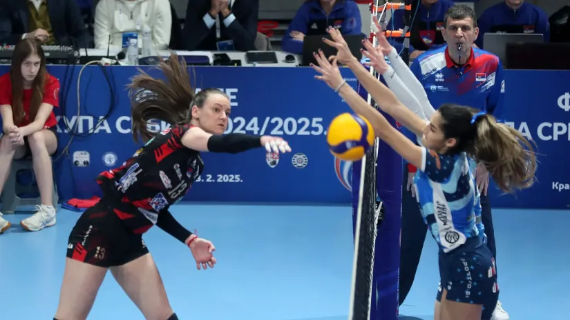

Osipa se Tent, Obrenovčanke ostale i bez Mine Mijatović
"Došla kao dete, odlazim kao čovek", istakla je bivša uzdanica Energetičarki
Tent je imao možda i najbolju sezonu u istoriji. Ako se zanemari titula osvojena administrativnim putem posle prekida zbog pandemije koronavirusa u 2020. godini, iza Obrenovčanki su nastupi krunisani sa dva trofeja. Izvesno je i da će u odbranu pehara u Kupu i Superkupu krenuti bez Mine Mijatović (23), odbojkašice koja se nalazi na pripremama reprezentacije.
Jedna od najvažnijih igračica u uspešnom pohodu je preko društvenih mreža obavestila javnost da je posle skoro deceniju završila saradnju sa popularnim Energetičarkama. Zvanično je provela u taboru superligaša osam leta. Ipak, taj broj je beznačajan u odnosu na sve što je doživela u Tentu.
Na Instagramu je i sumirala angažman, u objavi u kojoj je birala samo najlepše reči za sada već njen bivši klub. "Došla kao dete, odlazim kao čovek, a sve prošla zajedno sa Vama. Da, Vama, sa jednim velikim V. Koliko smo svega prošli, od onih najtežih do onih najboljih trenutaka. Zvuči kao fraza, ali zapravo nije, već suština sporta kojim se bavimo, a uče nas ceo život, kao što ste za ovih osam godina vi mene naučili. Naučili biti voljen! Naučili biti poštovan! Naučili biti hrabar! Naučili biti borac! Naučili ponosno braniti boje svog kluba. Naučili dati celog sebe bez grama rezerve u nešto što voliš svim srcem. I kada na kraju svega ponosno bacim pogled na proteklih osam godina, uspeli smo. Da, jesmo. Ispisali smo istoriju, ima li nešto lepše od toga? LAST DANCE sa Vama je bio uspešan! Hvala na svemu, voli vas vaša Minka", napisala je Mijatovićeva, koja karijeru nastavlja u turskom Ajdinu.